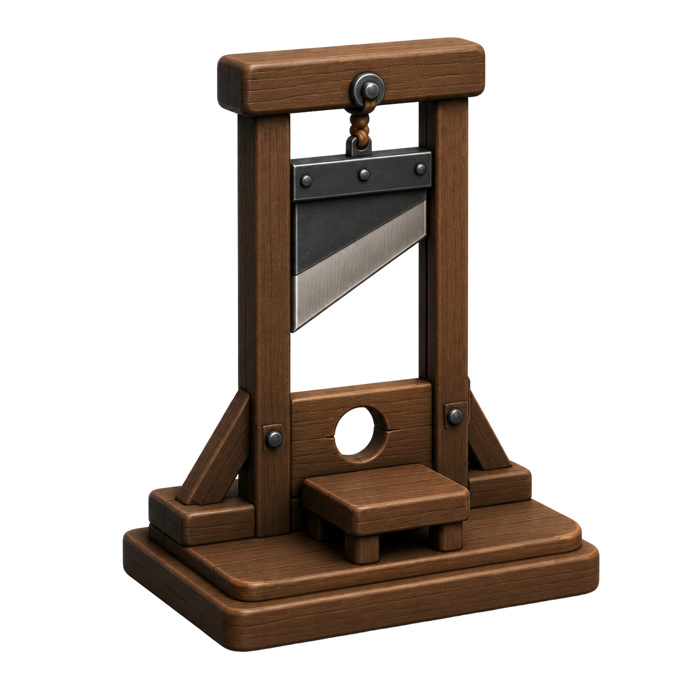
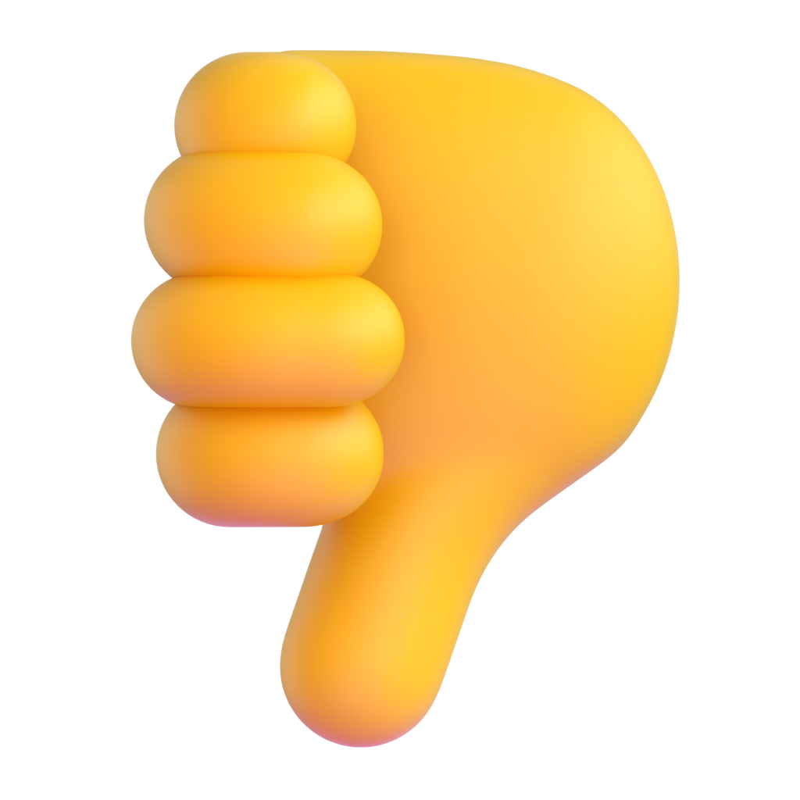

Status: PROPOSAL, not spec. The Figma file predates the player-initiated accusation
flow shipped at staging@0098577, so these ~8 states have no Figma ground truth
(plan .claude/plans/figma-ui-migration.md R6, matrix
matrix-day-actions.md §5.1–5.3). Every visual primitive below is lifted from an
existing Figma frame and cited in the per-frame notes; every string is either real app copy
(cited) or marked invented.
Companion spec with per-state purpose, copy strings and engine triggers:
day-accusation-mockups-spec.md.
data-invented)
Entry: phase_change → "day" + accusations_update with an empty list.
Variant — accusation already spent (engine
already_accused, game-engine.ts:1733; client mirror app.js:3022-3024):
Copy is real: Accuse someone / You've made your
accusation (app.js:3027, 3024). CTA geometry = the 358×60 radius-16 #FF6C02
"End day" row on 270:1471. No pending-list heading is drawn when the list is empty — the app
renders nothing (app.js:3041).
Entry: tap "Accuse someone" (client-only, app.js:3088-3091). No wire traffic yet.
All copy real: title (index.html:308), sleep row (app.js:3075),
Cancel/Confirm (index.html:311-312). Rows = living players
excluding yourself (app.js:3072; engine rejects self-accusation,
game-engine.ts:1737 "self"). Row geometry = Mafia/Nominate 326×70
#232729 radius-16 (130:323); selection = 2px #FF6C02 inset stroke.
Unselected state: no row outlined and Confirm at 30% opacity — Confirm starts
disabled (app.js:3077). Confirm sends
{type:"accuse", targetId} (null for the sleep row, app.js:3097-3098).
Viewer = kevin: accuser on row 1, accused on row 2, eligible seconder on row 3.
Entry: accusations_update (server.ts:101-115).
Real copy: row text {accuser} accuses {target} (app.js:3036),
buttons Second / Withdraw (app.js:3051, 3054).
Engine rules drawn here: stacking is legal (game-engine.ts:1759); the accuser cannot second
their own row (own_accusation, :1777); the accused cannot second theirs
(accused_cannot_second, :1778); one second per player per day
(already_seconded, :1779). Withdrawing does not refund the accusation
(:1793-1805) — hence the disabled launcher stays disabled.
Fourth treatment (not drawn): after a spared/failed ballot a player who already seconded
sees every row action-free with Second spent for today.
Thumbs-up asset = Figma Thumbs small 14×14 (225:918).
Entry: second_accusation → accusations_update (seconded line)
then vote_called (server.ts:1570-1586).


This state is already drawn (270:1649) — reproduced so the handoff
reads end-to-end. The only new thing is the entry path: the accusation panel disappears
(app.js:3144, "rule 9") and the narrator line above the ballot is
ACCUSATION_SECONDED_MESSAGES (narrator.ts:143-148), not Figma's invented
A vote has been called. Cancel vote renders for the admin only
(app.js:3165-3169). Adopting Figma's Execute natasha? drops the app's
Vote: prefix (index.html:325) — a copy change to confirm.
Entry: {type:"accuse", targetId:null} → accusations_update
with targetId === null (game-engine.ts:1729, 1746-1747).
Row copy real: {accuser} moves that the town sleeps (app.js:3035).
A sleep proposal is the same object as an accusation (targetId: null) and spends
the same one-per-day budget (game-engine.ts:1749) — so it stacks with execution accusations and
is seconded/withdrawn by the identical buttons. The moon glyph is a proposed visual marker only
(Figma uses emoji in nav labels, e.g. Night 🌙, 130:323).
Entry: vote_called {sleep:true, targetName:"", targetId:0}
(server.ts:124-125). Resolves via resolveSleepVote (game-engine.ts:1843-1871).
Headline copy real (app.js:3147). No portrait and no target name — the
wire carries targetName:"", so Figma's 78×78 image 1 slot has
nothing to fill. Thumb labels are invented because a bare thumbs-up is ambiguous on a
no-target ballot ("yes to what?"). Pass = strictly >50% of votes cast
(game-engine.ts:1853) → night with no execution; fail → day with pending accusations
still standing (:1863-1868).
A living admin sees both panels — accusations (as a player) and admin controls (app.js:2963-2978 + 3012-3031).
Admin card = Figma's Lobby rules frame verbatim
(270:1471: #232729, 2px white stroke, radius 16, pad 16; rows 326×60
#000000; End day as the orange 5th row inside the list).
(Vote #1 done) and the failed-vote line are real app strings (app.js:2971-2972) that
Figma has no slot for — parked in the header row and directly beneath it.
A dead admin keeps admin rights (CLAUDE.md) but loses the accusation panel
(app.js:3014) — so the top block disappears and the admin card stands alone.
Behaviour addition — today the app hides the whole panel for dead players (app.js:3014). Proposed: read-only.
No privacy cost: accusations are public by construction — the
accuser/target/seconder names are broadcast to the whole room via
broadcastToGame (server.ts:112-114) and narrated to everyone
(narrator.ts:129-148). Dead clients already receive accusations_update;
only the client suppresses the render. So this is a client-side change with zero wire impact.
30% opacity = Figma's dead-row treatment on the Players tab (261:2092).
Needs Hanson's sign-off — it is a live-behaviour delta, not a re-skin (R3).
Engine: accuse / second_accusation /
withdraw_accusation all require phase === "day"
(game-engine.ts:1730, 1771, 1799) — during a ballot the phase is "voting".
Divergence to decide: today the app hides the whole accusation block while the ballot is live (app.js:3144). This frame proposes keeping it visible at 30% with a disabled launcher, so the standing accusations that survive a failed vote don't vanish and reappear. Also shown: the app's post-vote state hides the thumb CTAs once you've voted (app.js:3154-3156), matching Figma's Execute/Spare dimming (270:1741 / 270:1801). Other edge cases, no frame needed: (a) ≤2 alive waiver — an accusation opens the ballot immediately with no second (game-engine.ts:1754-1757), so state 3 is skipped entirely; (b) silent rejects — the server drops every engine error without replying (server.ts:1559, 1575, 1593), so no error toast can be designed today without a server change; (c) accusations are also refused while a Hunter revenge gate is open (server.ts:997-1001).